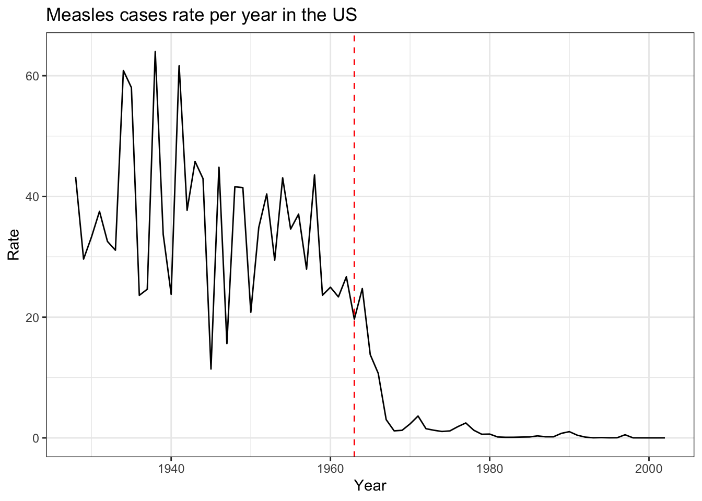
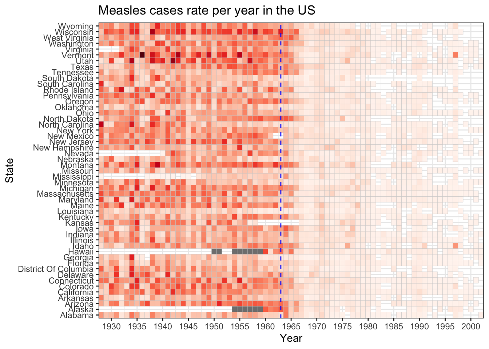

PS2
Impact of vaccines on battling infectious diseases
Introduction
Before the 20th century, infectious diseases profoundly impacted human populations. Limited medical knowledge and poor sanitation were two of many factors that contributed to the spread of diseases during this century. Towards the end of the 19th century, vaccines were developed and implemented as public health initiatives to control disease transmission and eventually reduce the impact of infectious diseases on the population.
Case Study: Measles on United State
Before the incorporation of the measles vaccine in the United States, measles was a widespread and concerning infectious disease as shown on the below graph. In the pre-vaccine era, measles outbreaks were frequent, leading to thousands of hospitalizations and even deaths annually. After the measles vaccine’s incorporation in 1963 (red dashed line), the United States witnessed a substantial decline in measles cases. The vaccine, proved highly effective in preventing measles infections. Vaccination efforts significantly reduced the incidence of measles, contributing to the control of measles transmission.
If we analize the measles cases during 1928 to 2002 period in United States by state it can be appreciated that the intense the color is the higher the case rate are. As time progresses and the vaccine was introduced the color intensity decline as the case rate was lower. Vaccination efforts led to the declaration of measles elimination in the country in 2000, meaning that the virus no longer circulated continuously. However, sporadic outbreaks still occur, often associated with pockets of unvaccinated individuals or imported cases from other regions, as show in the final years of this graph.

Conclusions
Vaccination efforts are a vital mitigation strategy in public health. When high vaccination coverage is maintained, it prevents the resurgence of the diseases. It is fundamental to continue with the vaccination efforts accompanied by educational activities on their importance and effectiveness as interventions to protect individuals.